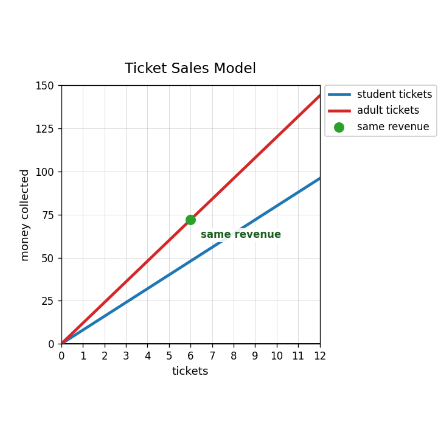
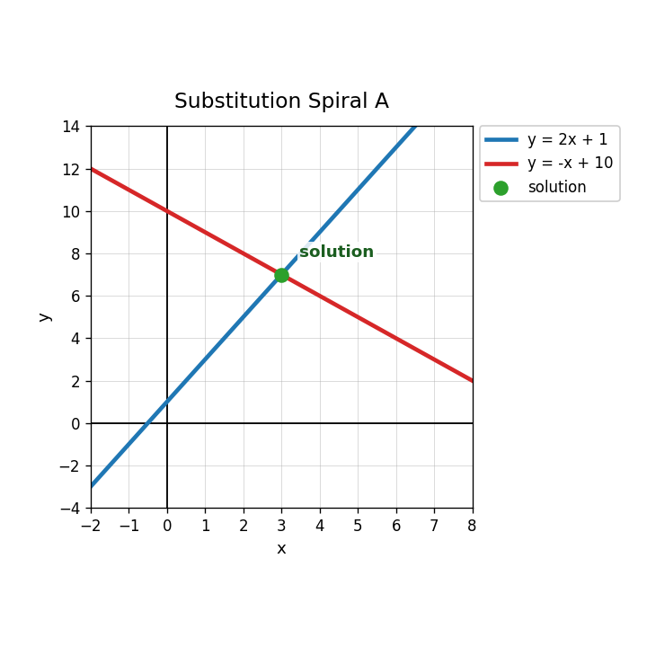

Practice Set 3.3.1
A student ticket costs 8 dollars and an adult ticket costs 12 dollars. Define variables for the number of each type of ticket.
A group sold 14 tickets total. Student tickets cost 8 dollars and adult tickets cost 12 dollars. The group collected 136 dollars. Which system matches the situation?
- $s+a=14$ and $8s+12a=136$
- $8s+12a=14$ and $s+a=136$
- $s+a=136$ and $8s+12a=14$
- $8a+12s=136$ and $s-a=14$
Use the system $s+a=14$ and $8s+12a=136$ to find the number of student tickets and adult tickets. Interpret your solution.
The graph shows two revenue models for ticket sales. Explain what the labeled point tells you about the two ticket types.

For $y=2x+1$ and $y=-x+10$, what expression can replace $y$ in the second equation?
Use the graph to check whether the labeled point satisfies both equations.

Rewrite $x+y=15$ so that $y$ is alone.
Which equation could start substitution for $y=x+4$ and $y=3x-4$?
- $x+4=3x-4$
- $x+4=3x+4$
- $y=x+3x$
- $y=4x-4$
Solve by substitution.
$$y=2x+1$$
$$y=-x+10$$
Use the graph to check your solution to the previous style of system.
Explain why setting $x+4=3x-4$ is valid for the system $y=x+4$ and $y=3x-4$.
Create a real-world situation where one equation would naturally be written as $y=2x+5$. Add a second equation and describe what the solution would mean.
What does the intersection point of two lines mean in a system of equations?
What solution type is shown by the parallel lines?

Use the graph to identify the solution of the system.

Determine whether $(3,5)$ satisfies both equations: $y=x+2$ and $y=-2x+11$.